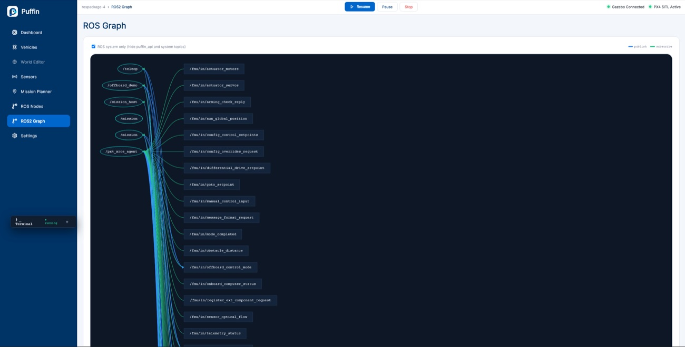
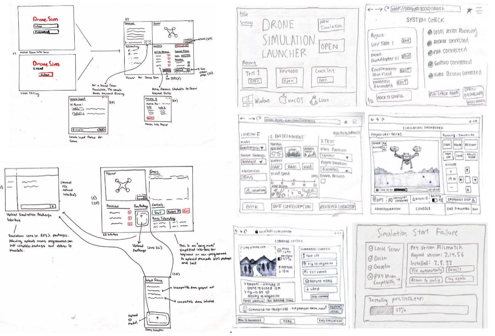
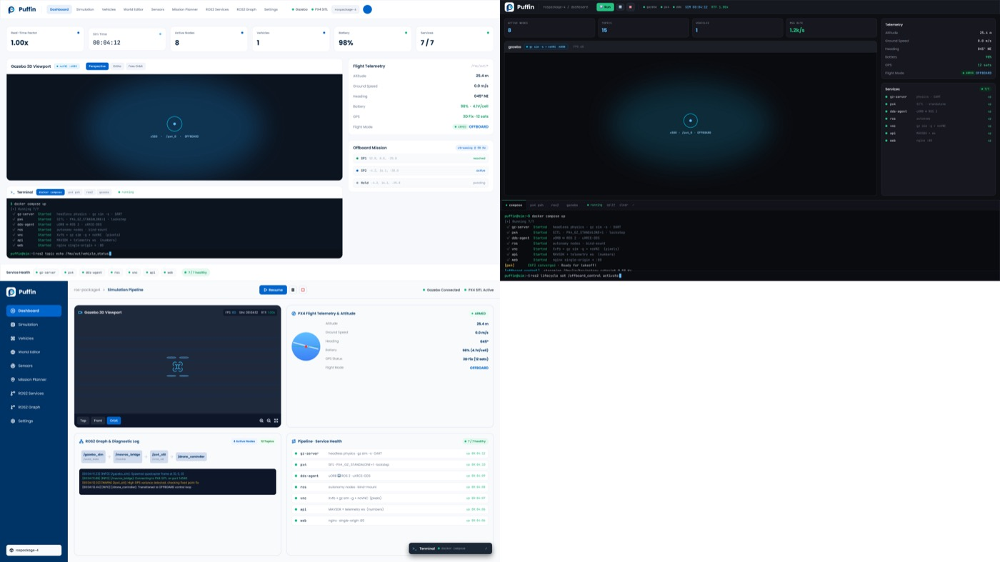
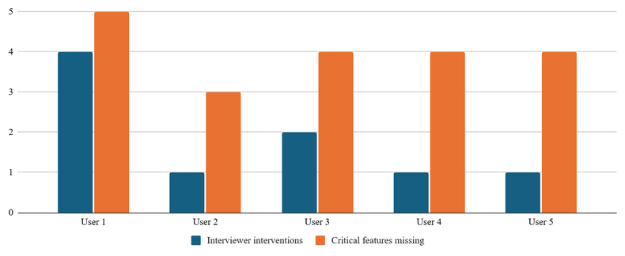
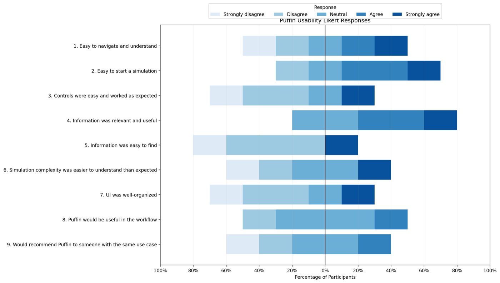

Case Study · Class Project
Puffin
A browser dashboard that makes drone simulation setup simple. For our CS 160 (User Interface Design) team project, we brought a drone’s flight software, its 3D simulator and the system that connects them into one window, so people can set up, watch and control a simulated flight in one place.
- My role
- I designed the lo-fi screens, built the Figma prototype, and designed and built the settings page (front end and back end).


Overview
The Problem
Running a drone simulation meant juggling several specialized programs (flight software, a 3D simulator and a messaging system that connects them), spread across different codebases and typed commands. It only worked on Linux, so technical leads kept onboarding people by hand, and teammates who didn’t program couldn’t run tests on their own.
Who It Serves
Programming leads tired of onboarding people again and again, mechanical and aerospace teammates who could design a test but not run one, and drone pilots and builders with very different levels of technical experience.
The Response
Puffin, a browser dashboard that sits on top of the existing simulation software: one place to start the simulation, check that every part is running, watch the drone, see live flight data, control the drone, and dig into technical details when needed.
Needfinding
We ran four interview and observation sessions with people who had different relationships to drones and simulation. All names are pseudonyms.
Glen
Drone Club Programming Lead
Walked us through a setup spread across the simulator, the flight software, and a remote-desktop window, with no clear sign of whether anything was ready. Onboarding kept falling on him.
Greg
Club President, Aerospace
Mechanical and aerospace teammates could design meaningful tests but stayed dependent on programmers to run and interpret them.
Haskell
Aerial Photographer, Drone Pilot
Showed that people skip important steps when the information they need is hard to get to.
Britt
Drone Pilot and Builder
Described simulators that assumed a lot of prior knowledge, a reminder that powerful tools aren’t enough if people can’t tell what the system is doing.
- Requirements we translated the research into
- A clear starting point (no need to know every codebase), status you can read at a glance (is it ready, is it healthy, what is the drone doing, what can I do next), one place to investigate problems, and depth on demand (simple for beginners without hiding what developers need).
Ideation
First-draft concepts ranged from a launcher that works on any computer, to controls you type in plain English, to a deck of physical cards for drone behaviors. We narrowed to three, then selected one.
Consolidated Dashboard
Solved the core problem of tools scattered across codebases, reached the most people, and stayed easy to update and extend.
Mobile Pre-Flight Checklist
Solved the pre-flight problem but lacked the technical depth experienced users needed, and didn’t tackle our most important research finding.
Behavior Library + Physical Cards
A hands-on system of cards and QR codes, but it wasn’t specific enough for technical work and was hard to adapt.
Paper Prototypes
Prototype 1 — Dashboard-First
Visible controls and simple status updates designed to feel approachable.
Prototype 2 — Command-Window-First
Built around a text command window, with file upload and a list of running programs, closer to the tools robotics programmers already use.

- Testing with three participant types
- Programmer valued working on any computer and seeing technical detail, wanted more detailed logs and finer controls, and slightly preferred Prototype 2. Builder valued direct controls and plain-language information, and preferred Prototype 1. Beginner found Prototype 1 approachable but overwhelming in options, and found Prototype 2’s command window unfamiliar without clear cues.
- Key finding
- Easy to use and technically deep aren’t opposites. The next version combined Prototype 1’s approachable dashboard with Prototype 2’s logs, list of running programs and deeper controls.
High-Fidelity Iteration
Design 1
Packed in system health, live flight data, mission progress and a command window. It showed a lot, but too many elements competed for attention and it leaned on typed commands.
Design 2
Putting Run, Pause and Stop right next to the simulation status made it clear what to do next, but the 3D view was still weak and typed commands made mistakes too easy.
Design 3
A modular, light dashboard with familiar sidebar navigation: the most approachable structure, though labels needed explanation and color carried too much of the status meaning.

We chose Design 3 as the foundation, then folded in Design 2’s explicit controls and Design 1’s technical detail. Outside feedback backed this up: one participant valued the system map for showing which parts of the system talk to each other, and another valued having a single place to check that every part was running. In both cases, people wanted Puffin to explain how the pieces fit together.
Final Design
Puffin works in three steps. Start: open the launcher, check that everything the simulation needs is running, and start, stop, or reset it. Fly and watch: see the drone in the 3D view alongside live flight data (position, speed, flight mode), and use Arm, Takeoff, Land, and Disarm buttons or a game controller. Fix: if something goes wrong, find the broken piece and restart it without leaving the app. A built-in demo flies the drone in a 10-meter square on its own.
Usability Evaluation
We ran five usability tests where participants talked through their thinking as they worked. Each person had to start the simulation and confirm it was ready, watch the drone fly a square on its own and then land it, and finally find and fix a simulation that had stopped.


“Ready” was shown, but not clearly
People paused to work out whether the simulation, the connection, or other required parts were actually running.
Implication: one system-health summary that rolls the simulator, flight software, flight data, and anything still missing into a single clear “ready” or “not ready.”
The steps before takeoff weren’t explained
One person couldn’t find the takeoff button; another didn’t realize they had to switch to manual-control mode and arm the drone (turn its motors on) first.
Implication: show readiness, mode, arming and takeoff as an ordered pre-flight checklist, and have greyed-out buttons explain what’s missing.
Technical information was useful but scattered
Experienced users valued the detailed system-map pages; newer users didn’t understand what they were for.
Implication: keep the detailed views, but add plain-language explanations and group related location and status information.
Spotting a problem didn’t help people fix it
One person’s 3D view got stuck with no way to reset it, and warnings didn’t say what to do next.
Implication: pair each warning with its cause and a recommended action, and add reset and reconnect buttons inside the app.
Experience level changed what people needed
Newer users wanted onboarding and tooltips; experienced users wanted joystick control and more say over which flight data they see.
Implication: show the basics first (is it ready, what’s next, how to recover) and let experienced users expand for more detail.
What's Next
Four priorities should come before any new features, because they most directly help people finish tasks and recover from problems on their own:
Further out:
Under the hood
For technical readers: Puffin sits on top of PX4 (open-source drone flight software, run here in simulated mode, known as SITL), Gazebo (the 3D physics simulator), and ROS 2 (the messaging system robot programs use to talk to each other), all packaged with Docker so it runs the same on any machine. The browser talks to a server through a REST API, and a live WebSocket connection streams flight data and powers a floating terminal for lower-level access. The system-map pages show each running ROS 2 program (a “node”), how they connect, and let you switch them on and off. The square-flight demo is a ROS 2 program that sends PX4 a stream of target positions (“offboard setpoints”).
All three workflows (start, fly, fix) were verified, and the build includes 29+ automated tests. The tests check that the simulation reports its status correctly and starts, stops, and resets on command; that takeoff and landing refuse to run when it isn’t safe; that the dashboard never shows stale flight data; and that each user’s login and saved settings work.